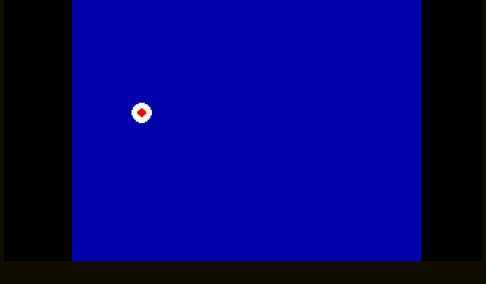
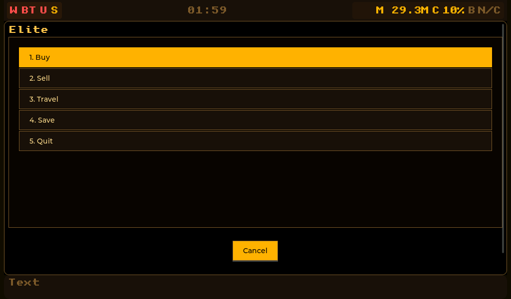
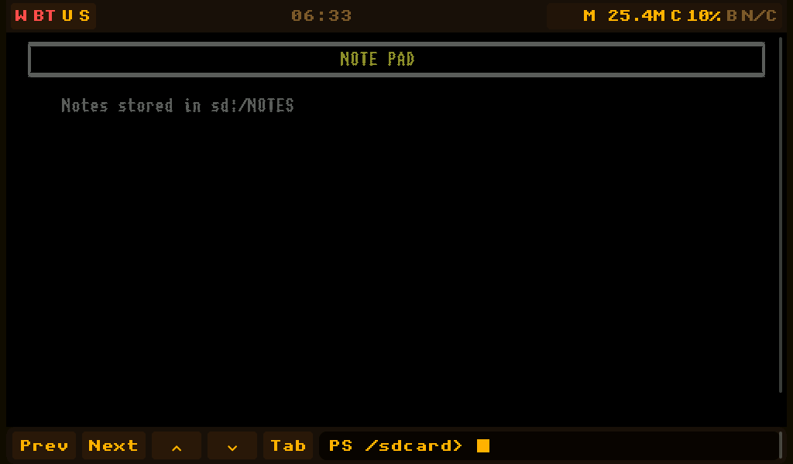
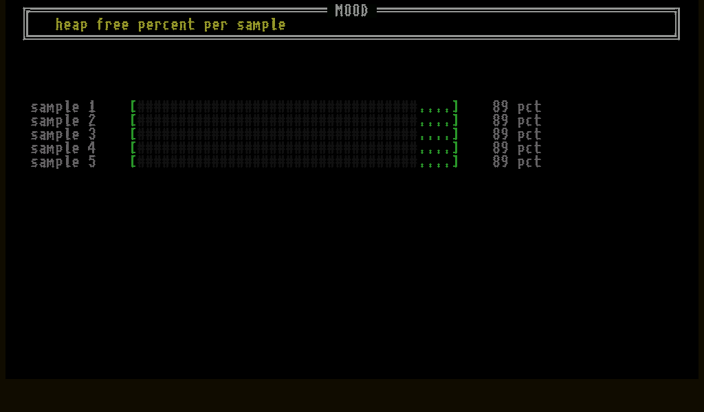
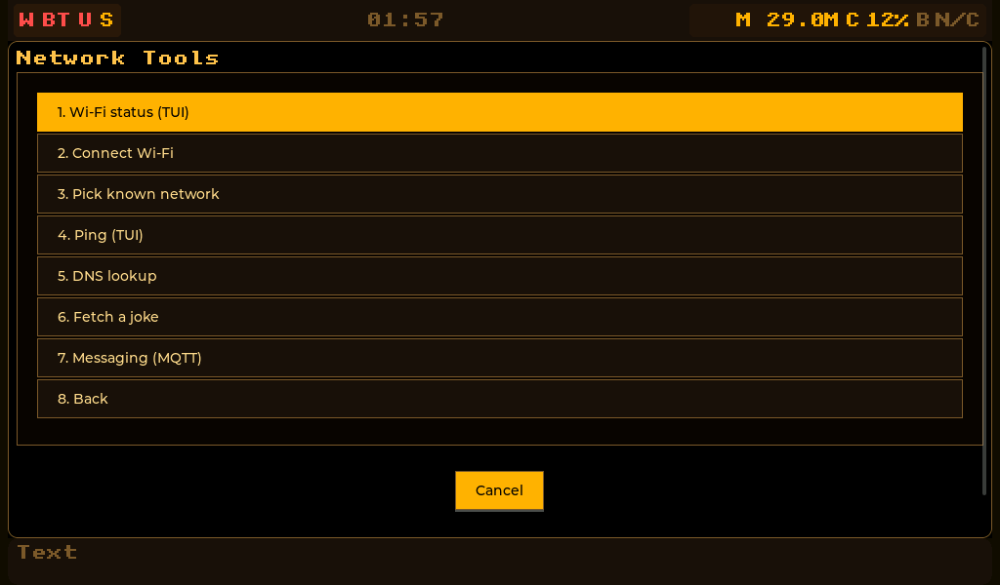
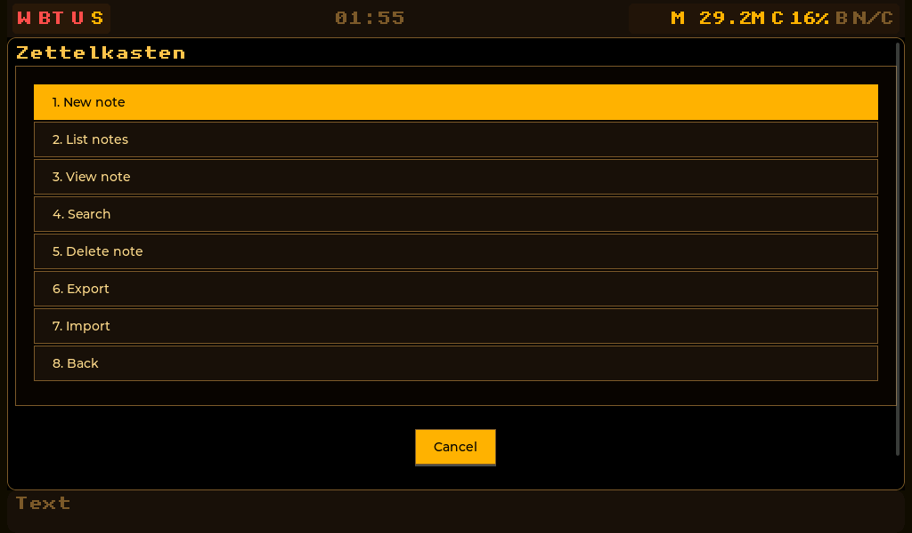
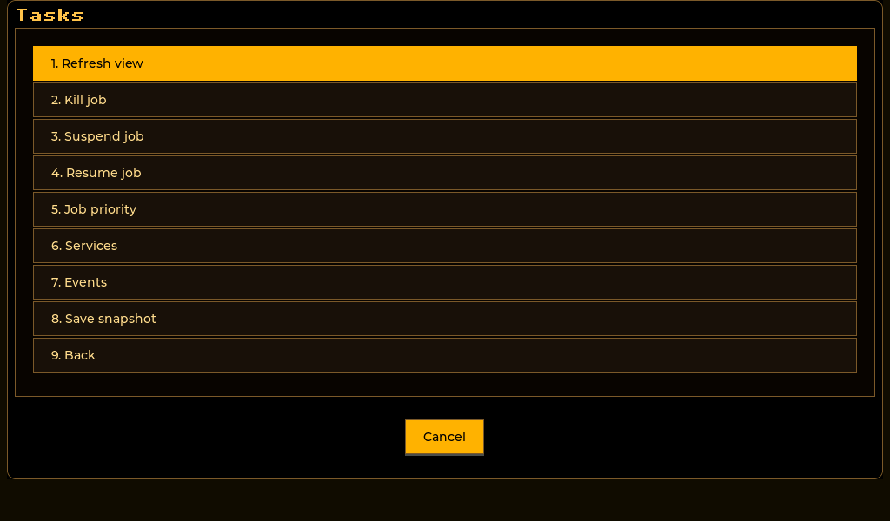

These are the latest gallery captures verified by visual inspection and the identity/colour/uniqueness gates. They are board-free release-candidate evidence, not proof of hardware sign-off. The Gfx Toolkit image is an honest host-generated proof from the real gfx core; all others are the existing device captures. Excluded below are captures with known defects.







Excluded pending hardware recapture: snake.png (3-cell stub;
a host proof would fabricate gameplay), web.png (shell input row
visible by design), and five menu captures with a clipped last row
(chat, diag, files, fun,
set). None of these is presented as a corrected proof.